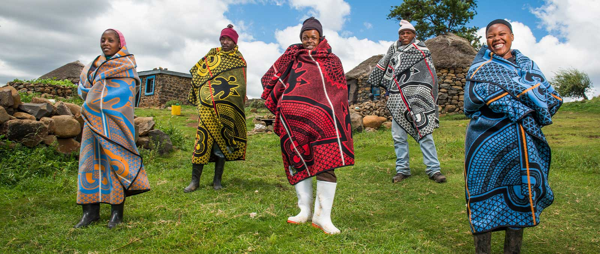
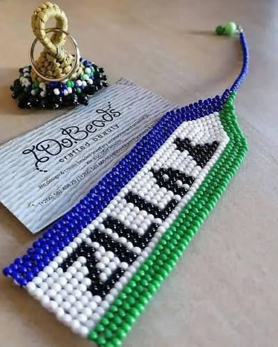

Seshoeshoe
A brightly patterned fabric named after King Moshoeshoe I, worn by Basotho women at weddings, initiation ceremonies, and national celebrations. The designs are bold and deeply symbolic.
The Mountain Kingdom
A nation entirely above 1,000 metres, cradled by the Maluti Mountains and shaped by the proud heritage of the Basotho people.
Introduction
Lesotho is a small, landlocked kingdom completely surrounded by South Africa. It is the only independent state in the world that lies entirely above 1,000 metres in elevation — a fact that gives it its poetic nickname, "Kingdom in the Sky."
Its lowest point, at the junction of the Orange and Makhaleng rivers, sits at 1,400 metres — higher than the highest peaks of many countries. The nation's territory is dominated by the Maluti Mountains and the Drakensberg escarpment, which form a dramatic, rugged landscape of high plateaus, deep gorges, and cascading waterfalls.
Despite its small size, Lesotho is a country of remarkable contrasts: snow-capped peaks in winter, wildflower meadows in spring, and golden highland grasslands in autumn. It is a place where the modern and the traditional coexist — from the capital city of Maseru to the remote mountain villages that have changed little in centuries.

Geography
From the lowlands in the west to the Drakensberg escarpment in the east, Lesotho's geography tells a story of ancient rock, ice, and water.
Running north to south through the centre of the country, the Maluti Mountains form the backbone of Lesotho. Peaks reach over 3,000 metres, and the highest point — Thabana Ntlenyana — rises to 3,482 metres.
Lesotho is the source of the Orange and Caledon rivers. Its high rainfall and snowfall feed the Lesotho Highlands Water Project, which supplies water to South Africa's Gauteng province.
The Sehlabathebe National Park — a UNESCO World Heritage Site — protects rare Afro-Alpine species, dramatic rock formations, and ancient San rock art.
Cultural Heritage
The Basotho nation was forged in the early 19th century by King Moshoeshoe I, who united disparate clans against the upheaval of the mfecane (a period of widespread migration and conflict in Southern Africa). His stronghold at Thaba Bosiu became the spiritual and political heart of the nation.
Today, Basotho culture is a living, breathing tradition. The seshoeshoe — a distinctive printed fabric worn at ceremonies and celebrations — is a symbol of national identity. The Basotho blanket, originally a trade item, has become an iconic garment worn across generations.
Sesotho, the national language, is spoken by nearly everyone, alongside English. Traditional music, dance, and storytelling remain central to community life, especially in rural mountain villages.
Explore Cultural Experiences
Living Traditions
Basotho identity is expressed through textiles, beadwork, and the celebrated Basotho hat.
A brightly patterned fabric named after King Moshoeshoe I, worn by Basotho women at weddings, initiation ceremonies, and national celebrations. The designs are bold and deeply symbolic.

A conical woven hat with a distinctive topknot, the mokorotlo is a national symbol of Lesotho. It appears on the national flag, coins, and the logo of the national football team.

Introduced by European traders in the 19th century, the woollen blanket was quickly adopted and reimagined as a marker of status, ceremony, and comfort in the mountain climate.

Basotho artisans create intricate beadwork, clay pots, and woven grass mats. Many crafts are still made by hand in mountain villages and sold at local markets.
History
From the reign of Moshoeshoe I to modern independence, Lesotho's history is inseparable from its landscape.
King Moshoeshoe I unites Basotho clans and establishes his stronghold at Thaba Bosiu, a mountain fortress that repels repeated attacks. His diplomacy and strategic vision lay the foundation for the Basotho nation.
Facing pressure from Boer settlers, Moshoeshoe I requests British protection. Basutoland becomes a British protectorate, a status it retains until independence.
On 4 October 1966, Basutoland becomes the independent Kingdom of Lesotho, a constitutional monarchy within the Commonwealth.
Lesotho is a stable democracy and a member of the United Nations, the African Union, and the Southern African Development Community. Tourism and water exports are central to its economy.
Travel with Care
Lesotho's landscapes and cultures are precious. Travellers can help protect them by following a few simple principles.
Ask before photographing people. Greet village elders respectfully. Dress modestly in rural areas, and remember that many traditions carry deep spiritual meaning.
Buy crafts directly from artisans, hire local guides, and stay in community-run accommodation where possible. Your spending has a real, lasting impact.
Stay on marked trails, carry out what you carry in, and avoid disturbing wildlife. Lesotho's alpine ecosystems are fragile and slow to recover.
Lesotho is the "water tower" of Southern Africa. Even so, water in rural areas is precious. Use it sparingly and never pollute rivers or streams.
Take time to understand the history of the places you visit. A guided conversation with a local elder can transform a journey into something unforgettable.
Lesotho rewards the open-minded traveller. Engage with the culture, try the food, learn a few words of Sesotho, and embrace the pace of mountain life.
Explore our destination guides, browse the gallery, or send us a travel enquiry to start planning.